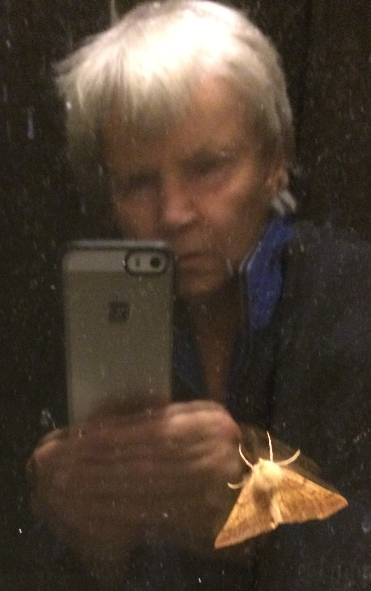

Min me-sida i Kursen databas (v1)

Detta är min me-sida i kursen. Denna sidan innehåller en presentation av mig själv. Jag skriver lite under hela kursen.
Mitt namn är Britt Hallin, pensionär som behöver underhålla de hjärnceller som fortfarande finns kvar. Jag har arbetat med ADB och/eller data i större delen av mitt liv. Det har varit allt från programmerare till operatör. Min tidigare "daghund" i stället har flyttat till en annan kommun nu. Jag vet inte ännu hur man gör för att rotera den. Får fixa det i ett senare kursmoment, moment 05, då vi håller på med bilder. Undras om man använder *.@{fa-css-prefix}-rotate-90 { .fa-icon-rotate(90deg, 1); }*, som finns i mappen theme/node_modules/fontawesome-free/less. Fast den kanske bara avser ikoner och inte bilder. Nej, det var inte där. I kmom05 lär jag mig om CImage. Har nu kompletterat "src=..." med "aro" så att den nu ser ut så här *src="img/hund.jpg?w=250&aro*. (Det kanske inte blir så med användning av tidigare .less-varianter.) Jag kommer från Dalarna, närmare bestämt Mora, och har kvar mitt barndomshem. Numera bor jag i Bromma. Mina intressen är trädgård (jag är ju pensionär), hundar och hästar. Jag har en odlingslott i [Föreningen Råcksta Fritidsträdgårdar](https://rackstakoloni.se/) och var tidigare dagmatte åt en [liten yorkshireterriertik](https://www.skk.se/sv/hundraser/yorkshireterrier/). Jag hade häst i mer än 30 år. De var tre engelska fullblod och ett svenskt halvblod, varav ett köpt och de övriga min uppfödning. Hade jag skaffat häst idag hade det blivit en [lusitano](http://www.cavalo-lusitano.com/). Denna webbplats är byggd i HTML, CSS och Markdown och är en del i kursen design. Detta innehåll är skrivet i **markdown** och du hittar innehållet i filen `content/index.md`. ### Detta är skoj men vad visade de på TV igår?###Vi syns och hörs i forum och chatt!
Nu är klockan